에너지관리기사 (2020-09-26 기출문제)
1과목: 연소공학
1. 집진장치에 대한 설명으로 틀린 것은?
- 전기 집진기는 방전극을 음(陰), 집진극을 양(陽)으로 한다.
- 전기집진은 쿨롱(coulomb)력에 의해 포집된다.
- 소형 사이클론을 직렬시킨 원심력 분리장치를 멀티 스크러버(multi-scrubber)라 한다.
- 여과 집진기는 함진 가스를 여과재에 통과시키면서 입자를 분리하는 장치이다.
(정답률: 74%)

2. 이론 습연소가스량 Gow와 이론 건연소가스량 God의 관계를 나타낸 식으로 옳은 것은? (단, H는 수소체적비, w는 수분체적비를 나타내고, 식의 단위는 Nm3/kg 이다.)
- God = Gow + 1.25(9H + w)
- God = Gow - 1.25(9H + w)
- God = Gow + (9H + w)
- God = Gow - (9H - w)
(정답률: 70%)
3. 저압공기 분무식 버너의 특징이 아닌 것은?
- 구조가 간단하여 취급이 간편하다.
- 공기압이 높으면 무화공기량이 줄어든다.
- 점도가 낮은 중유도 연소할 수 있다.
- 대형보일러에 사용된다.
(정답률: 74%)
4. 기체연료의 장점이 아닌 것은?
- 열효율이 높다.
- 연소의 조절이 용이하다.
- 다른 연료에 비하여 제조비용이 싸다.
- 다른 연료에 비하여 회분이나 매연이 나오지 않고 청결하다.
(정답률: 76%)
5. 환열실의 전열면적(m2)과 전열량(W) 사이의 관계는? (단, 전열면적은 F, 전열량은 Q, 총괄전열계수는 V이며, △tm은 평균온도차이다.)
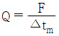
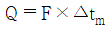
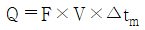
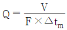
(정답률: 77%)
6. 연소가스와 외부공기의 밀도차에 의해서 생기는 압력차를 이용하는 통풍 방법은?
- 자연 통풍
- 평행 통풍
- 압입 통풍
- 유인 통풍
(정답률: 76%)
7. 분젠 버너를 사용할 때 가스의 유출 속도를 점차 빠르게 하면 불꽃 모양은 어떻게 되는가?
- 불꽃이 엉클어지면서 짧아진다.
- 불꽃이 엉클어지면서 길어진다.
- 불꽃의 형태는 변화 없고 밝아진다.
- 아무런 변화가 없다.
(정답률: 76%)
8. 메탄 50V%, 에탄 25V%, 프로판 25V%가 섞여 있는 혼합 기체의 공기 중에서 연소하한계는 약 몇 % 인가? (단, 메탄, 에탄, 프로판의 연소하한계는 각각 5V%, 3V%, 2.1V% 이다.)
- 2.3
- 3.3
- 4.3
- 5.3
(정답률: 64%)
9. 다음 성분 중 연료의 조성을 분석하는 방법 중에서 공업분석으로 알 수 없는 것은?
- 수분(W)
- 회분(A)
- 휘발분(V)
- 수소(H)
(정답률: 73%)
10. 가연성 혼합기의 공기비가 1.0 일 때 당량비는?
- 0
- 0.5
- 1.0
- 1.5
(정답률: 75%)
11. B중유 5kg을 완전 연소시켰을 때 저위발열량은 약 몇 MJ 인가? (단, B중유의 고위발열량은 41900 kJ/kg, 중유 1kg에 수소 H는 0.2kg, 수증기 W는 0.1kg 함유되어 있다.)
- 96
- 126
- 156
- 186
(정답률: 29%)
12. 다음 중 굴뚝의 통풍력을 나타내는 식은? (단, h는 굴뚝높이, γa는 외기의 비중량, γg는 굴뚝속의 가스의 비중량, g는 중력가속도이다.)
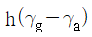
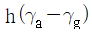
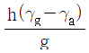
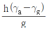
(정답률: 47%)
13. 효율이 60%인 보일러에서 12000 kJ/kg의 석탄을 150kg을 연소시켰을 때의 열손실은 몇 MJ인가?
- 720
- 1080
- 1280
- 1440
(정답률: 37%)
14. 연료의 연소 시 CO2max(%)는 어느 때의 값인가?
- 실제공기량으로 연소시
- 이론공기량으로 연소시
- 과잉공기량으로 연소시
- 이론양보다 적은 공기량으로 연소시
(정답률: 66%)
15. 다음 각 성분의 조성을 나타낸 식 중에서 틀린 것은? (단, m : 공기비, Lo : 이론공기량, G : 가스량, Go : 이론 건연소 가스량이다.)
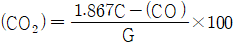
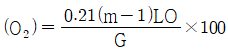
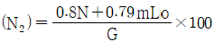
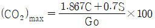
(정답률: 55%)
16. 중유에 대한 설명으로 틀린 것은?
- A중유는 C중유보다 점성이 작다.
- A중유는 C중유보다 수분 함유량이 작다.
- 중유는 점도에 따라 A급, B급, C급으로 나뉜다.
- C중유는 소형디젤기관 및 소형보일러에 사용된다.
(정답률: 70%)
17. 중유의 저위발열량이 41860 kJ/kg인 원료 1kg을 연소시킨 결과 연소열이 31400 kJ/kg이고 유효 출열이 30270 kJ/kg일 때, 전열효율과 연소효율은 각각 얼마인가?
- 96.4%, 70%
- 96.4%, 75%
- 72.3%, 75%
- 72.3%, 96.4%
(정답률: 57%)
18. 수소 1kg을 완전히 연소시키는데 요구되는 이론산소량은 몇 Nm3인가?
- 1.86
- 2.8
- 5.6
- 26.7
(정답률: 47%)
19. 액체연료의 연소방법으로 틀린 것은?
- 유동층연소
- 등심연소
- 분무연소
- 증발연소
(정답률: 68%)
20. 제조 기체연료에 포함된 성분이 아닌 것은?
- C
- H2
- CH4
- N2
(정답률: 54%)
2과목: 열역학
21. 1 mol의 이상기체가 25℃, 2MPa로부터 100 kPa까지 가역 단열적으로 팽창하였을 때 최종온도(K)는? (단, 정적비열 Cv는
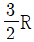
이다.)- 60
- 70
- 80
- 90
(정답률: 27%)
22. 비열비(k)가 1.4인 공기를 작동유체로 하는 디젤엔진의 최고온도(T3) 2500K, 최저온도(T1)가 300K, 최고압력(P3)가 4MPa, 최저압력(P1)이 100kPa 일 때 차단비(cut off ratio; rc)는 얼마인가?
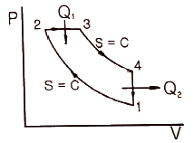
- 2.4
- 2.9
- 3.1
- 3.6
(정답률: 39%)
23. 분자량이 29인 1kg의 이상기체가 실린더 내부에 채워져 있다. 처음에 압력 400kPa, 체적 0.2m3인 이 기체를 가열하여 체적 0.076 m3, 온도 100℃가 되었다. 이 과정에서 받은 일(kJ)은? (단, 폴리트로픽 과정으로 가열한다.)
- 90
- 95
- 100
- 104
(정답률: 18%)
24. 임의의 과정에 대한 가역성과 비가역성을 논의하는 데 적용되는 법칙은?
- 열역학 제0법칙
- 열역학 제1법칙
- 열역학 제2법칙
- 열역학 제3법칙
(정답률: 67%)
25. 100kPa, 20℃의 공기를 0.1 kg/s의 유량으로 900kPa 까지 등온 압축할 때 필요한 공기압축기의 동력(kW)은? (단, 공기의 기체상수는 0.287 kJ/kg·K 이다.)
- 18.5
- 64.5
- 75.7
- 185
(정답률: 25%)
26. 증기 압축 냉동사이클의 증발기 출구, 증발기 입구에서 냉매의 비엔탈피가 각각 1284 kJ/kg, 122kJ/kg이면 압축기 출구측에서 냉매의 비엔탈피(kJ/kg)는? (단, 성능계수는 4.4 이다.)
- 1316
- 1406
- 1548
- 1632
(정답률: 33%)
27. 그림은 공기 표준 오토 사이클이다. 효율 η에 관한 식으로 틀린 것은? (단, ε는 압축비, k는 비열비이다.)
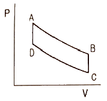
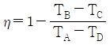
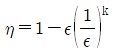
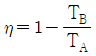
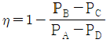
(정답률: 48%)
28. 정상상태에서 작동하는 개방시스템에 유입되는 물질의 비엔탈피가 h1이고, 이 시스템 내에 단위질량당 열을 q만큼 전달해 주는 것과 동시에, 축을 통한 단위질량당 일을 w만큼 시스템으로 유출되는 물질의 비엔탈피 h2를 옳게 나타낸 것은? (단, 위치에너지와 운동에너지는 무시한다.)
- h2 = h1 + q - w
- h2 = h1 - q - w
- h2 = h1 + q + w
- 2 = h1
(정답률: 39%)
29. 다음 중 오존층을 파괴하며 국제협약에 의해 사용이 금지된 CFC 냉매는?
- R-12
- HFO1234jf
- NH3
- CO2
(정답률: 69%)
30. 2kg, 30℃인 이상기체가 100kPa에서 300kPa 까지 가역 단열과정으로 압축되었다며 최종온도(℃)는? (단, 이 기체의 정적비열은 750 J/kg·K, 정압비열은 1000 J/kg·K 이다.)
- 99
- 126
- 267
- 399
(정답률: 35%)
31. 수증기를 사용하는 기본 랭킨사이클의 복수기 압력이 10 kPa, 보일러 압력이 2 MPa, 터빈 일이 792 kJ/kg, 복수기에서 방출되는 열량이 1800 kJ/kg일 때 열효율(%)은? (단, 펌프에서 물의 비체적은 1.01×10-3m3/kg 이다.)
- 30.5
- 32.5
- 34.5
- 36.5
(정답률: 15%)
32. 랭킨사이클의 터빈출구 증기의 건도를 상승시켜 터빈날개의 부식을 방지하기 위한 사이클은?
- 재열 사이클
- 오토 사이클
- 재생 사이클
- 사바테 사이클
(정답률: 56%)
33. 다음 중 강도성 상태량이 아닌 것은?
- 압력
- 온도
- 비체적
- 체적
(정답률: 41%)
34. 97℃로 유지되고 있는 항온조가 실내 온도 27℃인 방에 놓여 있다. 어떤 시간에 1000kJ의 열이 항온조에서 실내로 방출되었다면 다음 설명 줄 틀린 것은?
- 항온조속의 물질의 엔트로피 변화는 –2.7 kJ/K 이다.
- 실내 공기의 엔트로피의 변화는 약 3.3 kJ/K 이다.
- 이 과정은 비가역적이다.
- 항온조와 실내 공기의 총 엔트로피는 감소하였다.
(정답률: 53%)
35. 표준 기압(101.3 kPa), 20℃에서 상대 습도 65%인 공기의 절대 습도(kg/kg)는? (단, 건조 공기와 수증기는 이상기체로 간주하며, 각각의 분자량은 29, 18로 하고, 20℃의 수증기의 포화압력은 2.24 kPa 로 한다.)
- 0.0091
- 0.0202
- 0.0452
- 0.0724
(정답률: 25%)
36. 증기의 기본적 성질에 대한 설명으로 틀린 것은?
- 임계 압력에서 증발열은 0 이다.
- 증발 잠열은 포화 압력이 높아질수록 커진다.
- 임계점에서는 액체와 기체의 상에 대한 구분이 없다.
- 물의 3중점은 물과 얼음과 증기의 3상이 공존하는 점이며 이 점의 온도는 0.01℃ 이다.
(정답률: 45%)
37. 이상기체가 등온과정에서 외부에 하는 일에 대한 관계식으로 틀린 것은? (단, R은 기체상수이고, 계에 대해서 m은 질량, V는 부피, P는 압력, T는 온도를 나타낸다. 하첨자 “1”은 변경 전, 하첨자 “2”는 변경 후를 나타낸다.)
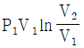
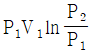
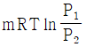
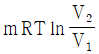
(정답률: 49%)
38. 이상적인 표준 증기 압축식 냉동 사이클에서 등엔탈피 과정이 일어나는 곳은?
- 압축기
- 응축기
- 팽창밸브
- 증발기
(정답률: 58%)
39. 초기의 온도, 압력이 100℃, 100kPa 상태인 이상기체를 가열하여 200℃, 200kPa 상태가 되었다. 기체의 초기상태 비체적이 0.5m3/kg 일 때, 최종상태의 기체 비체적(m3/kg)은?
- 0.16
- 0.25
- 0.32
- 0.50
(정답률: 30%)
40. 열손실이 없는 단단한 용기 안에 20℃의 헬륨 0.5kg을 15W의 전열기로 20분간 가열하였다. 최종 온도(℃)는? (단, 헬륨의 정적비열은 3.116 kJ/kg·K, 정압비열은 5.193 kJ/kg·K 이다.)
- 23.6
- 27.1
- 31.6
- 39.5
(정답률: 26%)
3과목: 계측방법
41. 가스 크로마토그래피의 구성요소가 아닌 것은?
- 검출기
- 기록계
- 칼럼(분리관)
- 지르코니아
(정답률: 65%)
42. 방사율에 의한 보정량이 적고 비접촉법으로는 정확한 측정이 가능하나 사람 손이 필요한 결점이 있는 온도계는?
- 압력계형 온도계
- 전기저항 온도계
- 열전대 온도계
- 광고온계
(정답률: 68%)
43. 자동제어계에서 응답을 나타낼 때 목표치를 기준한 앞뒤의 진동으로 시간의 지연을 필요로 하는 시간적 동작의 특성을 의미하는 것은?
- 동특성
- 스텝응답
- 정특성
- 과도응답
(정답률: 58%)
44. 색온도계에 대한 설명으로 옳은 것은?
- 온도에 따라 색이 변하는 일원적인 관계로부터 온도를 측정한다.
- 바이메탈 온도계의 일종이다.
- 유체의 팽창정도를 이용하여 온도를 측정한다.
- 기전력의 변화를 이용하여 온도를 측정한다.
(정답률: 65%)
45. 관속을 흐르는 유체가 층류로 되려면?
- 레이놀즈수가 4000보다 많아야 한다.
- 레이놀즈수가 2100보다 적어야 한다.
- 레이놀즈수가 4000 이어야 한다.
- 레이놀즈수와는 관계가 없다.
(정답률: 72%)
46. 다음 중 사하중계(dead weight gauge)의 주된 용도는?
- 압력계 보정
- 온도계 보정
- 유체 밀도 측정
- 기체 무게 측정
(정답률: 54%)
47. 시스(sheath) 열전대 온도계에서 열전대가 있는 보호관 속에 충전되는 물질로 구성된 것은?
- 실리카, 마그네시아
- 마그네시아, 알루미나
- 알루미나, 보크사이트
- 보크사이트, 실리카
(정답률: 59%)
48. 지름이 각각 0.6m, 0.4m인 파이프가 있다. (1)에서의 유속이 8m/s이면 (2)에서의 유속(m/s)은 얼마인가?
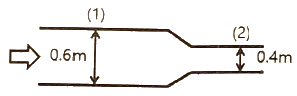
- 16
- 18
- 20
- 22
(정답률: 57%)
49. 열전도율형 CO2 분석계의 사용 시 주의사항에 대한 설명 중 틀린 것은?
- 브리지의 공급 전류의 점검을 확실하게 한다.
- 셀의 주위 온도와 측정가스 온도는 거의 일정하게 유지시키고 온도의 과도한 상승을 피한다.
- H2를 혼입시키면 정확도를 높이므로 같이 사용한다.
- 가스의 유속을 일정하게 하여야 한다.
(정답률: 68%)
50. 열전대 온도계에서 열전대선을 보호하는 보호관 단자로부터 냉접점까지는 보상도선을 사용한다. 이때 보상도선의 재료로서 가장 적합한 것은?
- 백금로듐
- 알루멜
- 철선
- 동-니켈 합금
(정답률: 41%)
51. 점도 1 pa·s와 같은 값은?
- 1 kg/m·s
- 1 P
- kgf·s/m2
- 1 cP
(정답률: 53%)
52. 다음 중 미세한 압력차를 측정하기에 적합한 액주식 압력계는?
- 경사관식 압력계
- 부르동관 압력계
- U자관식 압력계
- 저항선 압력계
(정답률: 61%)
53. 제어량에 편차가 생겼을 경우 편차의 적분차를 가감해서 조작량의 이동속도가 비례하는 동작으로서 잔류편차가 제어되나 제어 안정성은 떨어지는 특징을 가진 동작은?
- 비례동작
- 적분동작
- 미분동작
- 다위치동작
(정답률: 64%)
54. 다음 중 간접식 액면측정 방법이 아닌 것은?
- 방사선식 액면계
- 초음파식 액면계
- 플로트식 액면계
- 저항전극식 액면계
(정답률: 64%)
55. 액체와 고체연료의 열량을 측정하는 열량계는?
- 봄브식
- 융커스식
- 클리브랜드식
- 타그식
(정답률: 60%)
56. 분동식 압력계에서 300MPa 이상 측정할 수 있는 것에 사용되는 액체로 가장 적합한 것은?
- 경유
- 스핀들유
- 피마자유
- 모빌유
(정답률: 53%)
57. 물을 함유한 공기와 건조공기의 열전도율 차이를 이용하여 습도를 측정하는 것은?
- 고분자 습도센서
- 염화리튬 습도센서
- 서미스터 습도센서
- 수정진동자 습도센서
(정답률: 66%)
58. 측정량과 크기가 거의 같은 미리 알고 있는 양의 분동을 준비하여 분동과 측정량의 차이로부터 측정량을 구하는 방식은?
- 편위법
- 보상법
- 치환법
- 영위법
(정답률: 49%)
59. 다음 중 그림과 같은 조작량 변화 동작은?
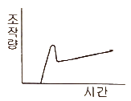
- P.I 동작
- ON-OFF 동작
- P.I.D 동작
- P.D 동작
(정답률: 62%)
60. 오리피스 유량계에 대한 설명으로 틀린 것은?
- 베르누이의 정리를 응용한 계기이다.
- 기체와 액체에 모두 사용이 가능하다.
- 유량계수 C는 유체의 흐름이 층류이거나 와류의 경우 모두 같고 일정하며 레이놀즈수와 무관하다.
- 제작과 설치가 쉬우며, 경제적인 교축기구이다.
(정답률: 63%)
4과목: 열설비재료 및 관계법규
61. 용선로(culpola)에 대한 설명으로 틀린 것은?
- 대량생산이 가능하다.
- 용해 특성상 용탕에 탄소, 황, 인 등의 불순물이 들어가기 쉽다.
- 다른 용해로에 비해 열효율이 좋고 용해시간이 빠르다.
- 동합금, 경합금 등 비철금속 용해로로 주로 사용된다.
(정답률: 53%)
62. 다음 중 터널요에 대한 설명으로 옳은 것은?
- 예열, 소성, 냉각이 연속적으로 이루어지며 대차의 진행방향과 같은 방향으로 연소가스가 진행된다.
- 소성기간이 길기 때문에 소량생산에 적합하다.
- 인건비, 유지비가 많이 든다.
- 온도조절의 자동화가 쉽지만 제품의 품질, 크기, 형상 등에 제한을 받는다.
(정답률: 44%)
63. 에너지이용 합리화법령상 산업통상자원부장관 또는 시·도지사가 한국에너지공단 이사장에게 권한을 위탁한 업무가 아닌 것은?
- 에너지관리지도
- 에너지사용계획의 검토
- 열사용기자재 제조업의 등록
- 효율관리기자재의 측정 결과 신고의 접수
(정답률: 53%)
64. 에너지이용 합리화법령상 최고사용압력(MPa)과 내부 부피(m3)을 곱한 수치가 0.004를 초과하는 압력용기 중 1종 압력용기에 해당되지 않는 것은?
- 증기를 발생시켜 액체를 가열하며 용기안의 압력이 대기압을 초과하는 압력용기
- 용기안의 화학반응에 의하여 증기를 발생하는 것으로 용기안의 압력이 대기압을 초과하는 압력용기
- 용기안의 액체의 성분을 분리하기 위하여 해당 액체를 가열하는 것으로 용기안의 압력이 대기압을 초과하는 압력용기
- 용기안의 액체의 온도가 대기압에서의 비점을 초과하자 않는 압력용기
(정답률: 46%)
65. 기밀을 유지하기 위한 패킹이 불필요하고 금속부분이 부식될 염려가 없어, 산 등의 화학약품을 차단하는데 주로 사용하는 밸브는?
- 앵글밸브
- 체크밸브
- 다이어프램 밸브
- 버터플라이 밸브
(정답률: 68%)
66. 에너지이용 합리화법령상 에너지사용계획을 수립하여 제출하여야 하는 사업주관자로서 해당되지 않는 사업은?
- 항만건설사업
- 도로건설사업
- 철도건설사업
- 공항건설사업
(정답률: 56%)
67. 에너지이용 합리화법에서 정한 에너지절약전문기업 등록의 취소요건이 아닌 것은?
- 규정에 의한 등록기준에 미달하게 된 경우
- 사업수행과 관련하여 다수의 민원을 일으킨 경우
- 동법에 따른 에너지절약전문기업에 대한 업무에 관한 보고를 하지 아니하거나 거짓으로 보고한 경우
- 정당한 사유 없이 등록 후 3년 이상 계속하여 사업수행실적이 없는 경우
(정답률: 62%)
68. 에너지이용 합리화법령상 열사용기자재에 해당하는 것은?
- 금속요로
- 선박용 보일러
- 고압가스 압력용기
- 철도차량용 보일러
(정답률: 52%)
69. 에너지이용 합리화법령에 따라 인정검사대상기기 관리자의 교육을 이수한 사람의 관리범위 기준은 증기보일러로서 최고사용 압력이 1MPa 이하이고 전열면적이 최대 얼마 이하일 때 인가?
- 1m2
- 2m2
- 5m2
- 10m2
(정답률: 55%)
70. 에너지이용 합리화법령에서 정한 검사대상기기의 계속 사용검사에 해당하는 것은?
- 운전성능검사
- 개조검사
- 구조검사
- 설치검사
(정답률: 63%)
71. 에너지이용 합리화법상 에너지이용 합리화 기본계획에 따라 실시계획을 수립하고 시행하여야 하는 대상이 아닌 자는?
- 기초지방자치단체 시장
- 관계 행정기관의 장
- 특별자치도지사
- 도지사
(정답률: 47%)
72. 에너지이용 합리화법에 따라 에너지다소비 사업자가 그 에너지사용시설이 있는 지역을 관할하는 시·도지사에게 신고하여야 할 사항에 해당되지 않는 것은?
- 전년도의 분기별 에너지사용량·제품생산량
- 에너지 사용기자재의 현황
- 사용 에너지원의 종류 및 사용처
- 해당 연도의 분기별 에너지사용예정량·제품생산 예정량
(정답률: 48%)
73. 지르콘(ZrSiO4) 내화물의 특징에 대한 설명 중 틀린 것은?
- 열팽창율이 작다.
- 내스폴링성이 크다.
- 염기성 용재에 강하다.
- 내화도는 일반적으로 SK 37~38 정도이다.
(정답률: 35%)
74. 요로의 정의가 아닌 것은?
- 전열을 이용한 가열장치
- 원재료의 산화반응을 이용한 장치
- 연료의 환원반응을 이용한 장치
- 열원에 따라 연료의 발열반응을 이용한 장치
(정답률: 51%)
75. 견요의 특징에 대한 설명으로 틀린 것은?
- 석회석 클링커 제조에 널리 사용된다.
- 하부에서 연료를 장입하는 형식이다.
- 제품의 예열을 이용하여 연소용 공기를 예열한다.
- 이동 화상식이며 연속요에 속한다.
(정답률: 50%)
76. 전기와 열의 양도체로서 내식성, 굴곡성이 우수하고 내압성도 있어 열교환기의 내관 및 화학공업용으로 사용되는 관은?
- 동관
- 강관
- 주철관
- 알루미늄관
(정답률: 64%)
77. 옥내온도는 15℃, 외기온도가 5℃일 때 콘크리트 벽(두께 10cm, 길이 10m 및 ㄴ포이 5m)을 통한 열손실이 1700W이라면 외부 표면 열전달계수(W/m2·℃)는? (단, 내부표면 열전달계수는 9.0 W/m2·℃ 이고, 콘크리트 열전도율은 0.87 W/m·℃ 이다.)
- 12.7
- 14.7
- 16.7
- 18.7
(정답률: 38%)
78. 다음 중 연속가열로의 종류가 아닌 것은?
- 푸셔식 가열로
- 워킹-빔식 가열로
- 대차식 가열로
- 회전로상식 가열로
(정답률: 51%)
79. 다음 강관의 표시기호 중 배관용 합금강 강관은?
- SPPH
- SPHT
- SPA
- STA
(정답률: 54%)
80. 크롬이나 크롬마그네시아 벽돌이 고온에서 산화철을 흡수하여 표면이 부풀어 오르고 떨어져 나가는 현상은?
- 버스팅(bursting)
- 스폴링(spalling)
- 슬래킹(slaking)
- 큐어링(curing)
(정답률: 64%)
5과목: 열설비설계
81. 보일러의 노통이나 화실과 같은 원통 부분이 외측으로부터의 압력에 견딜 수 없게 되어 눌려 찌그러져 찢어지는 현상을 무엇이라 하는가?
- 블리스터
- 압궤
- 팽출
- 라미네이션
(정답률: 72%)
82. 두께 150mm인 적벽돌과 100mm인 단열벽돌로 구성되어 있는 내화벽돌의 노벽이 있다. 적벽돌과 단열벽돌의 열전도율은 각각 1.4 W/m·℃, 0.07 W/m·℃일 때 단위면적당 손실열량은 약 몇 W/m2 인가? (단, 노 내 벽면의 온도는 800℃이고, 외벽면의 온도는 100℃ 이다.)
- 336
- 456
- 587
- 635
(정답률: 44%)
83. 보일러의 성능계산 시 사용되는 증발률(kg/m2·h)에 대한 설명으로 옳은 것은?
- 실제 증발량에 대한 발생증기 엔탈피와의 비
- 연료 소비량에 대한 상당증발량과의 비
- 상당 증발량에 대한 실제증발량과의 비
- 전열 면적에 대한 실제증발량과의 비
(정답률: 44%)
84. 수관보일러의 특징에 대한 설명으로 옳은 것은?
- 최대 압력이 1MPa 이하인 중소형 보일러에 작용이 일반적이다.
- 연소실 주위에 수관을 배치하여 구성한 수냉벽을 노에 구성한다.
- 수관의 특성상 기수분리의 필요가 없는 드럼리스 보일러의 특징을 갖는다.
- 열량을 전열면에서 잘 흡수시키기 위해 2-패스, 3-패스, 4-패스 등의 흐름 구성을 갖도록 설계한다.
(정답률: 50%)
85. 그림과 같이 내경과 외경이 Di, Do일 때, 온도는 각각 Ti, To, 관 길이가 L 인 중공 원관이 있다. 관 재질에 대한 열전도율을 k라 할 때, 열저항 R을 나타낸 식으로 옳은 것은? (단, 전열량(W)은
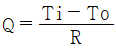
로 나타낸다.)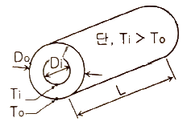
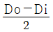
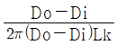
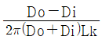
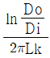
(정답률: 48%)
86. 입형 보일러의 특징에 대한 설명으로 틀린 것은?
- 설치 면적이 좁다.
- 전열면적이 적고 효율이 낮다.
- 증발량이 적으며 습증기가 발생한다.
- 증기실이 커서 내부 청소 및 검사가 쉽다.
(정답률: 56%)
87. 보일러의 부속장치 중 여열장치가 아닌 것은?
- 공기예열기
- 송풍기
- 재열기
- 절탄기
(정답률: 62%)
88. 관석(scale)에 대한 설명으로 틀린 것은?
- 규산칼슘, 황산칼슘 등이 관석의 주성분이다.
- 관석에 의해 배기가스의 온도가 올라간다.
- 관석에 의해 관내수의 순환이 불량해 진다.
- 관석의 열전도율이 아주 높아 전열면이 과열되어 각종 부작용을 일으킨다.
(정답률: 43%)
89. 보일러의 일상점검 계획에 해당하지 않는 것은?
- 급수배관 점검
- 압력계 상태점검
- 자동제어장치 점검
- 연료의 수요량 점검
(정답률: 64%)
90. 주위 온도가 20℃, 방사율이 0.3인 금속 표면의 온도가 150℃인 경우에 금속 표면으로부터 주위로 대류 및 복사가 발생될 때의 열유속(heat flux)은 약 몇 W/m2인가? (단, 대류 열전달계수는 h = 20 W/m2·K, 스테판-볼츠만 상수는 σ=5.7×10-8W/m2·K4 이다.)
- 3020
- 3330
- 4270
- 4630
(정답률: 20%)
91. 보일러에서 용접 후에 풀림처리를 하는 주된 이유는?
- 용접부의 열응력을 제거하기 위해
- 용접부의 균열을 제거하기 위해
- 용접부의 연신률을 증가시키기 위해
- 용접부의 강도를 증가시키기 위해
(정답률: 67%)
92. 증발량이 1200kg/h 이고 상당 증바라량이 1400 kg/h 일 때 사용 연료가 140 kg/h 이고, 비중이 0.8 kg/L 이면 상당 증발배수는 얼마인가?
- 8.6
- 10
- 10.7
- 12.5
(정답률: 30%)
93. 보일러에서 발생하는 저온부식의 방지 방법이 아닌 것은?
- 연료 중의 황 성분을 제거한다.
- 배기가스의 온도를 노점온도 이하로 유지한다.
- 과잉공기를 적게 하여 배기가스 중의 산소를 감소시킨다.
- 전열 표면에 내식재료를 사용한다.
(정답률: 56%)
94. 점식(pitting)에 대한 설명으로 틀린 것은?
- 진행속도가 아주 느리다.
- 양극반응의 독특한 형태이다.
- 스테인리스강에서 흔히 발생한다.
- 재료 표면의 성분이 고르지 못한 곳에 발생하기 쉽다.
(정답률: 62%)
95. 급수 불순물과 그에 따른 보일러 장해와의 연결이 틀린 것은?
- 철 - 수지산화
- 용존산소 - 부식
- 실리카 - 캐리오버
- 경도성분 – 스케일 부착
(정답률: 39%)
96. 보일러수의 분출시기가 아닌 것은?
- 보일러 가동 전 관수가 정지되었을 때
- 연속운전일 경우 부학 가벼울 때
- 수위가 지나치게 낮아졌을 때
- 프라이밍 및 포밍이 발생할 때
(정답률: 62%)
97. 두께 10mm의 판을 지름 18mm의 리벳으로 1열 리벳 겹치기 이음 할 때, 피치는 최소 몇 mm 이상이어야 하는가? (단, 리벳구멍의 지름은 21.5mm 이고, 리벳의 허용 인장응력은 40N/mm2, 허용 전단응력은 36 N/mm2 으로 하며, 강판의 인장응력과 전단응력은 같다.)
- 40.4
- 42.4
- 44.4
- 46.4
(정답률: 33%)
98. 과열기에 대한 설명으로 틀린 것은?
- 포화증기를 과열증기로 만드는 장치이다.
- 포화증기의 온도를 높이는 장치이다.
- 고온부식이 발생하지 않는다.
- 연소가스의 저항으로 압력손실이 크다.
(정답률: 52%)
99. 열정산에 대한 설명으로 틀린 것은?
- 원칙적으로 정격부하 이상에서 정상상태로 적어도 2시간 이상의 운전결과에 따른다.
- 발열량은 원칙적으로 사용 시 연료의 총발열량으로 한다.
- 최대 출영량을 시험할 경우에는 반드시 최대부하에서 시험을 한다.
- 증기의 건도는 98% 이상인 경우에 시험함을 원칙으로 한다.
(정답률: 54%)
100. 외경 76mm, 내경 68mm, 유효길이 4800mm의 수관 96개로 된 수관식 보일러가 있다. 이 보일러의 시간당 증발량은 약 몇 kg/h 인가? (단, 수관이외 부분의 전열면적은 무시하며, 전열면적 1m2 당 증발량은 26.9 kg/h 이다.)
- 2660
- 2760
- 2860
- 2960
(정답률: 22%)